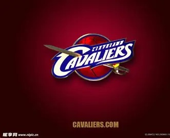

克利夫兰骑士队
2011 年状元起步的地方，也是队史首座总冠军诞生的地方
球队概况
| 加入 NBA | 1970 年 |
| 联盟 / 分区 | 东部联盟 · 中央分区 |
| 主场 | Rocket Arena |
| 总冠军 | 1 次（2016 年） |
| 队史高光 | 2014—2018 年连续四年打进总决赛 |
从里奇菲尔德到 2016
1970 年加入 NBA，隶属东部联盟中央分区，主场是 Rocket Arena。队史只拿过一次总冠军，即 2016 年在 1-3 落后时逆转勇士。
最辉煌的时期是詹姆斯效力的 2014—2018 年，连续四年打进总决赛，之后进入重建。2022 年得到米切尔，与莫布利、阿伦组成“双塔加双后卫”的核心；2025-26 赛季打进东部决赛，被尼克斯横扫。2026 年休赛期，米切尔与哈登先后续约，核心完整保留。

与欧文的交集
2011 年，骑士用状元签选中欧文，他在克利夫兰度过职业生涯的前六个赛季：2012 年拿下最佳新秀，2014 年当选全明星 MVP，2016 年随队夺得队史首座总冠军。那记在第七场最后时刻的三分，成为他生涯最重要的一个球。2017 年 8 月，他被交易至波士顿凯尔特人。